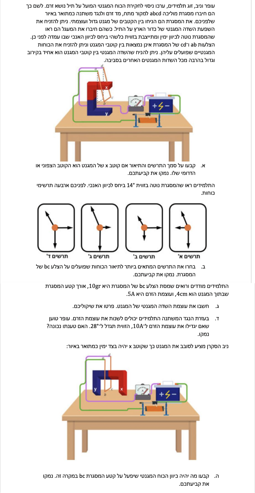
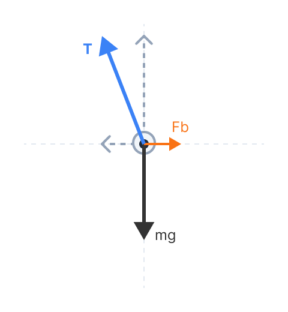

כוח מגנטי על תיל נושא זרם ומסגרת בשיווי משקל
פיזיקה חשמל ומגנטיות - רמת 5 יח"ל
פתרון מודרך, צעד-אחר-צעד הכולל תרשימי כוחות מפורטים
מבט כללי על המערכת
לפני שנתחיל, בואו נבין את הגיאומטריה של המערכת. המסגרת תלויה מציר אופקי העובר מקדימה לאחור (ציר z). לכן, המסגרת יכולה להתנדנד ימינה ושמאלה (במישור האופקי, ציר x).
הדק הסוללה השמאלי מסומן בפלוס (+) ומחובר בחוט הסגול לחזית המסגרת. זרם חשמלי במעגל זורם מההדק החיובי לשלילי, ולכן לאורך הצלע bc הזרם יזרום החוצה מן הדף. כיווני הצירים שלנו: ימינה זה x חיובי, למעלה זה y חיובי, והחוצה מהדף זה z חיובי.

סעיף א'
\( F = IlB\sin\alpha \)
נשתמש בכלל יד ימין למציאת כיוון כוח מגנטי על תיל. בנוסף, נסתמך על העיקרון שקווי השדה המגנטי מחוץ למגנט מכוונים מהקוטב הצפוני אל הקוטב הדרומי.
פתרון צעד-אחר-צעד:
נפעיל את כלל יד ימין עבור הצלע התחתונה bc:
- כיוון הזרם \(I\) הוא החוצה מן הדף (נכוון את האגודל, או את ארבע האצבעות בהתאם לגרסת הכלל שלכם, החוצה).
- כיוון הכוח \(\vec{F}\) הוא ימינה, מכיוון שהמסגרת נוטה ימינה.
- כדי לקיים תנאים אלו, השדה המגנטי \(\vec{B}\) חייב להיות מכוון כלפי מטה.
מכיוון שקווי השדה המגנטי מכוונים מחוץ למגנט מהקוטב הצפוני אל הקוטב הדרומי, וכאן השדה מכוון כלפי מטה, הרי שקווי השדה יוצאים מהקוטב העליון. לכן, הקוטב העליון x ממנו יוצאים הקווים הוא הקוטב הצפוני.
סעיף ב'
\( \Sigma\vec{F} = m\vec{a} \)
החוק הראשון של ניוטון: גוף הנמצא בשיווי משקל (התמדה) נמצא בתאוצה אפס ולכן שקול הכוחות הפועלים עליו חייב להתאפס לחלוטין (\( \Sigma\vec{F} = 0 \)).
פתרון צעד-אחר-צעד:
לפני שנתחיל לפסול תרשימים, נגדיר בדיוק מה אנחנו מחפשים בתרשים כוחות (FBD) תקין. אנו מחפשים שני תנאים הכרחיים:
- כיווני כוחות נכונים: זיהוי מדויק של הכיוון שאליו פועל כל אחד מהכוחות (כוח הכובד מטה, כוח מגנטי ימינה, ומתיחות שמאלה ולמעלה).
- איזון ופרופורציות בין הרכיבים: מכיוון שהמסגרת במצב התמדה (שיווי משקל), שקול הכוחות שווה לאפס (\( \Sigma\vec{F} = 0 \)). משמעות הדבר היא שרכיבי כוח המתיחות \(T\) חייבים לאזן במדויק את הכוחות האחרים: הרכיב האנכי מאזן את כוח הכובד (\( |T_y| = mg \)) והרכיב האופקי מאזן את הכוח המגנטי (\( |T_x| = F_B \)). בנוסף, מכיוון שזווית הנטייה באיור קטנה מ-45° (כלומר \(\tan(\theta) < 1\)), מתחייב כי הכוח האופקי (\( F_B \)) קטן משמעותית מהכוח האנכי (\( mg \)).
כעת, נבחן את התרשימים המוצעים לאור שני התנאים הללו:
- תרשים א': נפסל מכיוון שכיוון וקטור הכוח המגנטי הפוך מהכיוון הנכון (הוא משורטט שמאלה, בעוד שהכוח האמיתי פועל ימינה).
- תרשים ב': נפסל מכיוון שאף על פי שכיווני הכוחות נכונים, הגדלים שלהם אינם מאזנים זה את זה נכונה. בתרשים זה הכוח המגנטי משורטט כארוך וגדול יותר מכוח הכובד, בעוד שהסברנו שהוא חייב להיות קטן ממנו משמעותית.
- תרשים ד': נפסל מכיוון שהוא מציג רכיב אנכי ורכיב אופקי השווים באורכם. שוויון כזה פירושו ש-\( \tan(\theta) = 1 \), מצב שמתקיים אך ורק בזווית נטייה של 45 מעלות בדיוק, בניגוד לאיור.
לפיכך, התרשים היחיד שמציג גם כיוונים נכונים וגם סוגר מצולע כוחות בפרופורציות הנכונות (חץ \(mg\) ארוך משמעותית מחץ ה-\(F_B\)) הוא תרשים ג'.

סעיף ג'
- מסת צלע \(bc\): \(m = 0.01 \text{ kg}\)
- אורך הצלע בשדה: \(L = 0.04 \text{ m}\)
- עוצמת הזרם: \(I = 5 \text{ A}\)
- זווית נטייה: \(\theta = 14^\circ\)
- תאוצת הכובד: \(g = 10 \text{ m/s}^2\)
\( F = IlB\sin\alpha \) \( \Sigma\vec{F} = m\vec{a} \)
פירוק וקטורי הכוחות לצירים (x, y) והשוואת שקול הכוחות בכל ציר לאפס, עקב היות המערכת במצב שיווי משקל.
פתרון צעד-אחר-צעד:
נבטא תחילה את גודל הכוח המגנטי הפועל על צלע bc. הנוסחה היא \( F_B = ILB\sin\alpha \).
שימו לב לזהותה של הזווית \(\alpha\): זוהי הזווית שבין כיוון הזרם בתיל לבין כיוון השדה המגנטי. בשאלה שלנו, הזרם זורם החוצה מן הדף (במקביל לציר z), ואילו השדה המגנטי מכוון אנכית כלפי מטה (ציר y). מאחר שהצירים הללו מאונכים זה לזה במרחב, מתקיים בהכרח \( \alpha = 90^\circ \), ומכאן ש-\( \sin(90^\circ) = 1 \).
חשוב מאוד לא לבלבל זווית מבנית זו עם זווית הנטייה של המסגרת (\( \theta = 14^\circ \)). לכן נקבל פשוט: \( F_B = ILB \).
כעת, נפרק את כוח המתיחות האלכסוני \(T\) לרכיבים. הזווית \(\theta=14^\circ\) נתונה ביחס לאנך (ציר y).

נחלק את המשוואה השנייה במשוואה הראשונה כדי להיפטר מהנעלם \(T\):
כעת, נבודד את \(B\) ונציב את הנתונים שהמרנו:
סעיף ד'
הסתמכות על הקשר האלגברי שפותח במלואו מתוך חוקי ניוטון בסעיף ג', המקשר בין זווית הנטייה לבין הזרם במעגל.
פתרון צעד-אחר-צעד:
כפי שפיתחנו בסעיף הקודם, הקשר המתמטי בין הזווית לנתוני המערכת הוא: \( \tan(\theta) = \frac{I L B}{mg} \).
מתוך המשוואה, אנו רואים שיש יחס ישר בין הזרם \(I\) לבין הפונקציה \(\tan(\theta)\), ולא לזווית \(\theta\) עצמה.
כלומר, הכפלת הזרם פי 2 תגרור הכפלת פונקציית הטנגנס פי 2:
כדי למצוא את הזווית החדשה, נשתמש בפונקציה ההפוכה (Arctangent):
כיוון שהזווית החדשה שקיבלנו (\(26.5^\circ\)) אינה שווה ל- \(28^\circ\), טענתו של עופר שגויה.
סעיף ה'
\( F = IlB\sin\alpha \)
שימוש בכלל יד ימין למציאת כיוון כוח מגנטי הפועל על תיל.
פתרון צעד-אחר-צעד:
- מכיוון שהקוטב הצפוני (x) מימין והקוטב הדרומי (y) משמאל, קווי השדה המגנטי \(\vec{B}\) מכוונים כעת באופן אופקי מימין לשמאל.
- כיוון הזרם \(I\) בצלע bc הוא החוצה מן הדף.
- נפעיל את כלל יד ימין: נכוון את אצבעות היד המייצגות את השדה שמאלה, ואת האגודל המייצג את הזרם החוצה (לכיוון הקורא).
- נראה כי כף היד שלנו הפעלת הכוח פונה במקרה כזה אנכית כלפי מטה.
מכאן שהכוח המגנטי יפעל כלפי מטה, באותו כיוון של כוח הכובד.